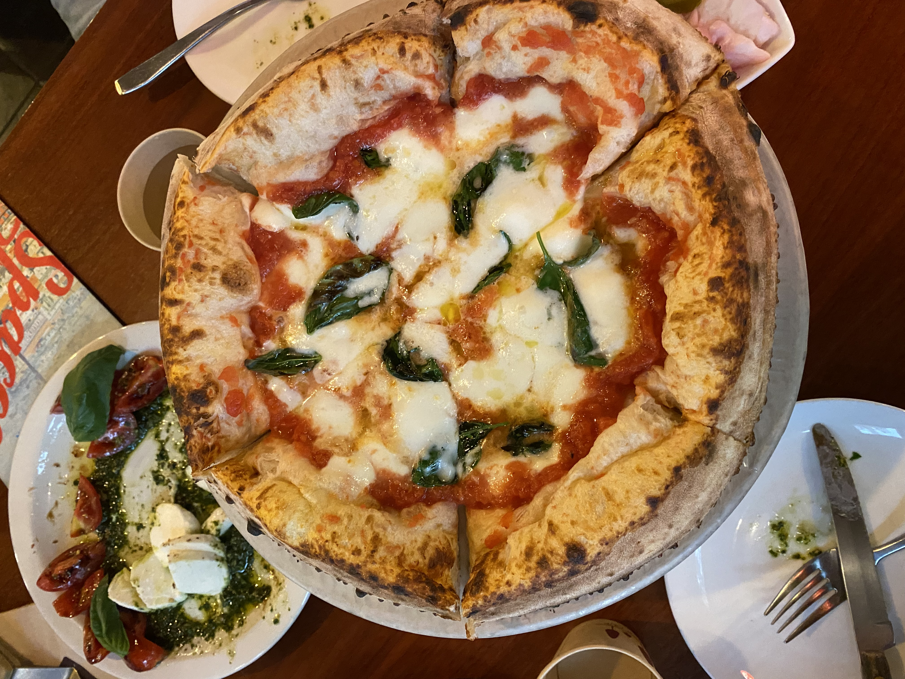
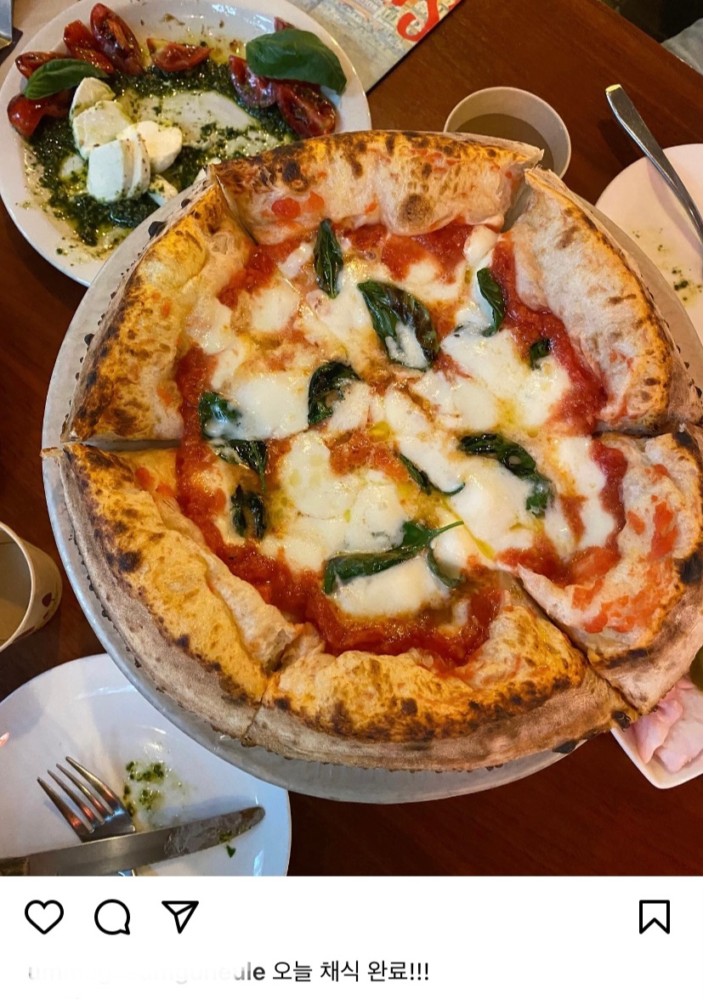

Daily Mission
안녕하세요. '이왕이면 비건' 팀입니다.저희가 비건 시작을 주저하는 여러분을 위하여 비건식사 인증 이벤트를 준비했습니다!
🌱이벤트 참여 방법
여러분의 비건 식사 사진을 인스타에 업로드 해주시면 됩니다.3일에 한 끼라도 비건 지향 식사를 했다면 준비완료! 하지만 각 인증마다 주제가 정해져 있는데요
- 고기 덩어리 안 먹기
- 집에서 채식 음식 만들어 먹기
- 비건 식당 찾아가서 식사하기
그래서 Step별로 나눠봤어요!
3일에 딱 한 끼!
성공했다면 인스타에 '이왕이면 비건' 을 태그 한 후 게시글로 올려주세요!!
비공개 계정은 참여가 불가능합니다. 꼭 공개 계정으로 변경해주세요!
위 주제에 맞는 게시글 하나씩 총 3개가 있으면 이벤트 참여 완료!!
이벤트 성공 상품으로는 비건 밀키트를 드립니다! 많은 참여 부탁드립니다.💚
🌿이벤트 예시

Step 1
오늘 미션을 성공했다면 음식 사진을 찍어주세요!

Step 2
사진을 인스타에 올린 후 '이왕이면 비건'을 태그해주세요!